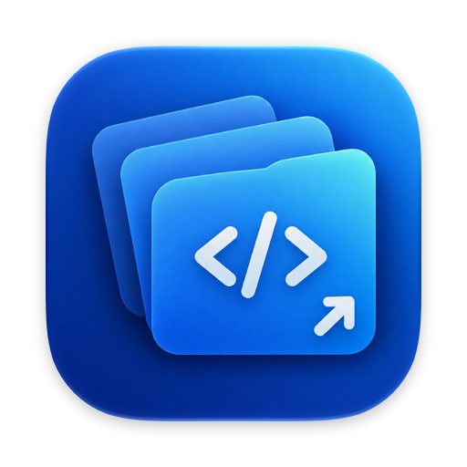
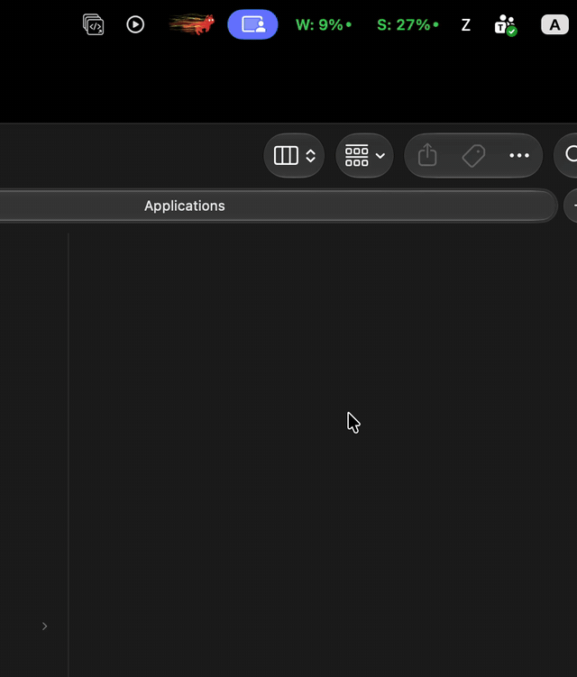

Workdeck
A tiny native macOS menu bar app that lists every VS Code project on your Mac and opens any of them in one click.

See it in action
No more cd some/deep/path && code .
- Automatic discoveryFinds
.code-workspacefiles and Git repositories, rescanned every time the popup opens. - No duplicatesRepositories already listed in a workspace file are hidden, so each project appears once.
- Git Repos tabBranch, uncommitted file count, and commits ahead of or behind the upstream for every repository.
- Status tabProd, dev, and local URLs for each project from a
.workdeck.jsonfile. Click to open, right-click to copy. - Run portless appsStart and stop portless dev servers from the menu bar and tail their logs in Terminal.
- Database at a glanceSee whether each running backend is connected to a local, dev, or prod database.
- Multiple root foldersScan several project folders and show all of them or one at a time.
- Current project in the menu barOptionally show which workspace the focused VS Code window has open.
- Native and lightweightSwiftUI
MenuBarExtra, no Dock icon, no Electron, nocodeCLI required.
Install
- Download
Workdeck-<version>.zipfrom the latest release. - Unzip it and move
Workdeck.appto/Applications. - The app is not notarized, so remove the quarantine flag once before the first launch:
xattr -dr com.apple.quarantine /Applications/Workdeck.app
Requires macOS 14 Sonoma or later, Visual Studio Code, and Git from the Xcode Command Line Tools. To build from source, see the README.